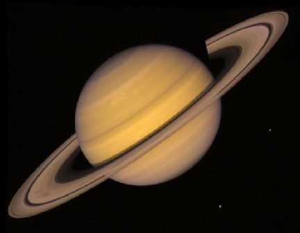
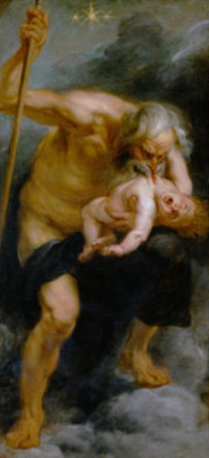

|
|
|
|
|
|
|
|
|
| 土 |
| 星 |
| 最 |
| 美 |
| 的 |
| 行 |
| 星 |
|  |
资料卡 |
|
位置: 第六位 距离: 1,427,000,000千米 自转周期: 10 小时 14 分钟 公转周期: 29.5 地球年 运动速度: 9.7 千米/秒 轨道偏心率: 0.056 卫星: 37（2005-3-4） 赤道直径: 120,536 千米 两极直径: 108,728 千米 质量: 5.688×*1026 千克 密度: 0.68克/立方厘米 大气成分: 氢 |
小知识 |
土星古称镇星或填星,因为土星公转周期大约为29.5年,我国古代有28宿,土星几乎是每年在一个宿中,有镇住或填满该宿的意味,所以称为镇星或填星，直径119300公里（为地球的9.5倍），是太阳系第二大行星。它与邻居木星十分相像，表面也是液态氢和氦的海洋，上方同样覆盖着厚厚的云层。土星上狂风肆虐，沿东西方向的风速可超过每小时1600公里。土星上空的云层就是这些狂风造成的，云层中含有大量的结晶氨。 |
土星——萨杜恩 土星（Saturn）是农神的名称。希腊神话中的农神Cronus是Uranus（天王星）和该亚的儿子，也是宙斯（木星）的父亲。土星也是英语中“星期六”（Saturday）的词根。土星的天文学符号是代表农神萨图尔努斯的镰刀。 |
三星一线 据广东天文学会透露，2016年8月24日将出现罕见的三星一线天文现象。美丽的土星、距离地球最近的外行星火星和天蝎座最亮恒星"心宿二"，三者依次连成一条直线，火星会合心宿二，两者相距只有1.8度，即还不到4个满月排在一起那么远。届时，天上最赤红的两颗天体汇聚在一起，十分引人注目。 这三星一线的稀奇天象，30年才发生一次，上一次出现在1986年2月17日。如果天色晴朗，我国各地乃至全球七大洲都可观赏到。其中南半球比北半球观察条件更理想。各地在日落后40分钟就可投入观察，可连续观测120分钟以上。观测方位在南方稍偏西的晚空。
|
友情链接：天文空间
©laizhiyang